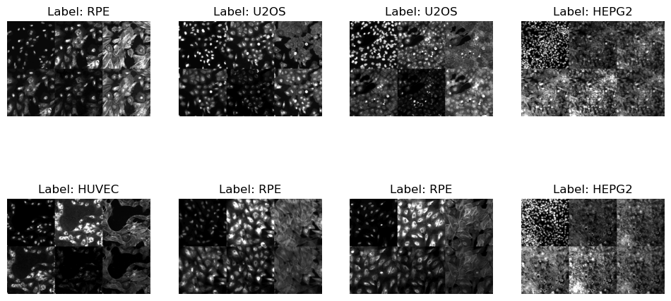
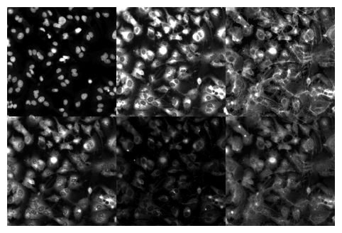
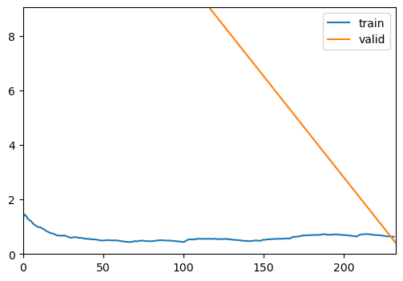
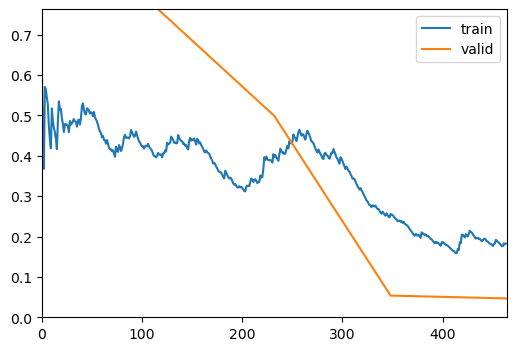
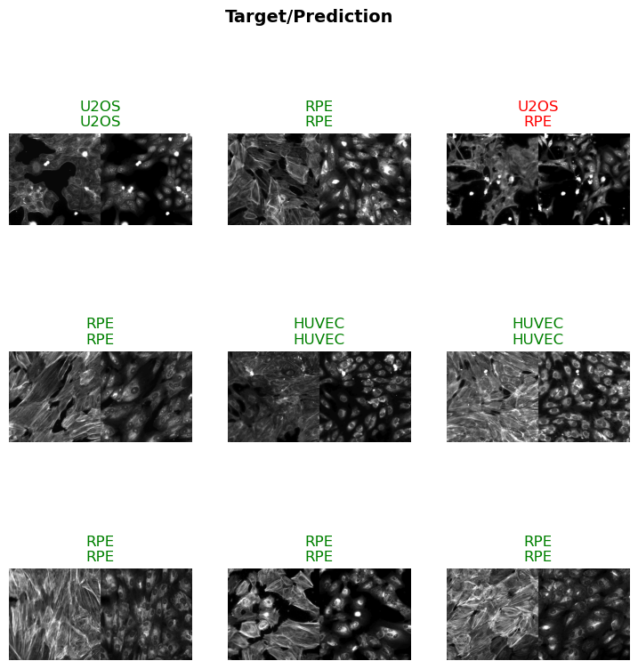
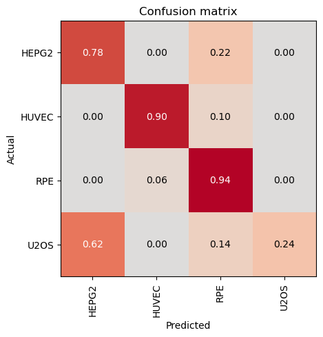

from bioMONAI.data import *
from bioMONAI.transforms import *
from bioMONAI.core import *
from bioMONAI.core import Path
from bioMONAI.data import *
from bioMONAI.nets import BasicUNet, DynUNet
from bioMONAI.losses import *
from bioMONAI.losses import SSIMLoss
from bioMONAI.metrics import *
from bioMONAI.datasets import download_file, split_dataframe, add_columns_to_csv
import osMultispectral Classification
Tutorial multispectral classification
import warnings
warnings.filterwarnings("ignore")device = get_device()
print(device)cudaDownload dataset
In the next cell, we will download a subset of the RXRX1 dataset from the MONAI repository. This dataset contains multispectral images that we will use for our classification task. The download_file function is used to download and extract the dataset to a specified directory.
- The dataset URL is specified, and a hash is provided to ensure data integrity.
- The
extractparameter is set toTrueto automatically extract the downloaded zip file. - The
extract_dirparameter is left empty, meaning the contents will be extracted to the specified directory.
- You can change the
urlvariable to point to a different dataset if needed.- Modify the
extract_dirparameter to specify a different extraction directory.- Ensure that the
hashvalue matches the dataset you are downloading to avoid data corruption issues.
# Define the base URL for the dataset
url = "https://github.com/Project-MONAI/MONAI-extra-test-data/releases/download/0.8.1/rxrx1_subset_monai.zip"
download_file(url, "../_data", extract=True, hash='e80db433db641bb390ade991b81f98814a26c7de30e0da6f20e8abddf7a84538', extract_dir='')Downloading data from 'https://github.com/Project-MONAI/MONAI-extra-test-data/releases/download/0.8.1/rxrx1_subset_monai.zip' to file '/home/biagio/Code/bioMONAI/nbs/_data/420070ba36287636b45f69ca979afd7a-rxrx1_subset_monai.zip'.
Unzipping contents of '/home/biagio/Code/bioMONAI/nbs/_data/420070ba36287636b45f69ca979afd7a-rxrx1_subset_monai.zip' to '/home/biagio/Code/bioMONAI/nbs/_data/'The file has been downloaded and saved to: ../_data
Extracted files have been saved to: ../_dataPrepare Image Paths and Update Metadata
In the next cell, we will prepare the image paths for each channel and update the metadata CSV file with these paths. This step is crucial for organizing the dataset and ensuring that each image is correctly associated with its corresponding metadata.
- We will read the metadata CSV file and extract the site IDs.
- For each site ID, we will generate the paths for the six channels of images.
- These paths will be stored in a dictionary and added as new columns to the metadata CSV file.
- A new CSV file will be created to avoid overwriting the original metadata file.
- You can modify the
data_folderandcsv_filevariables to point to a different dataset or metadata file.- If your dataset contains a different number of channels, adjust the range in the
channel_listgeneration accordingly.- Ensure that the directory structure and file naming conventions match those expected by the code.
data_folder = '../_data/rxrx1_subset_monai/'
csv_file = data_folder + 'metadata.csv'
import pandas as pd
df = pd.read_csv(csv_file)
ch1, ch2, ch3, ch4, ch5,ch6 = [],[],[],[],[],[]
for sid in df['site_id']:
site_id = sid.split('_')
base_image_path = os.path.join('images', site_id[0], f'Plate{site_id[1]}', f'{site_id[2]}_s{site_id[3]}_w')
channel_list = [f'{base_image_path}{i}.png' for i in range(1,7)]
ch1.append(channel_list[0])
ch2.append(channel_list[1])
ch3.append(channel_list[2])
ch4.append(channel_list[3])
ch5.append(channel_list[4])
ch6.append(channel_list[5])
image_paths = {'channel 1': ch1, 'channel 2': ch2, 'channel 3': ch3, 'channel 4': ch4, 'channel 5': ch5, 'channel 6': ch6}
# Let's create a new csv file to avoid overwriting the original one
new_csv_file = data_folder + 'metadata_updated.csv'
add_columns_to_csv(csv_file, image_paths, new_csv_file)Columns ['channel 1', 'channel 2', 'channel 3', 'channel 4', 'channel 5', 'channel 6'] added successfully. Updated file saved to '../_data/rxrx1_subset_monai/metadata_updated.csv'Split Dataset into Train, Validation, and Test Sets
In the next cell, we will split the updated metadata CSV file into training, validation, and test sets. This step is essential for training and evaluating our classification model. The split_dataframe function is used to perform the split based on the specified fractions.
- The
train_fractionparameter determines the proportion of the dataset to be used for training. - The
valid_fractionparameter determines the proportion of the dataset to be used for validation. - The
split_columnparameter specifies the column to be used for splitting the dataset. - The
add_is_validparameter adds a column to indicate whether a sample belongs to the validation set. - The
train_path,test_path, andvalid_pathparameters specify the file paths for the resulting CSV files. - The
data_save_pathparameter specifies the directory where the CSV files will be saved.
- You can adjust the
train_fractionandvalid_fractionparameters to change the proportions of the splits.- Modify the
split_columnparameter if you want to use a different column for splitting.- Ensure that the
data_save_pathdirectory exists and has write permissions.
split_dataframe(new_csv_file,
train_fraction=0.7,
valid_fraction=0.05,
split_column='dataset',
add_is_valid=True,
train_path="train.csv",
test_path="test.csv",
valid_path="valid.csv",
data_save_path=data_folder
)Train and test files saved as '../_data/rxrx1_subset_monai/train.csv' and '../_data/rxrx1_subset_monai/test.csv' respectively.
'is_valid' column added to '../_data/rxrx1_subset_monai/train.csv' for validation samples.Data Augmentation and DataLoader Preparation
In the next cell, we will define the data augmentation techniques and prepare the data loaders for training and validation. Data augmentation is crucial for improving the generalization of our model by artificially increasing the diversity of the training dataset. We will use a combination of intensity scaling, random cropping, rotation, and flipping transformations.
- The
ScaleIntensityPercentilestransformation scales the intensity values of the images based on the specified percentiles. - The
RandomResizedCroptransformation randomly crops the images to the specified size with a random scale. - The
RandRot90transformation randomly rotates the images by 90 degrees with the specified probability. - The
RandFliptransformation randomly flips the images horizontally or vertically with the specified probability. - The
BioDataLoaders.class_from_csvfunction is used to create the data loaders from the CSV file containing the image paths and labels.
- You can adjust the
bsvariable to change the batch size.- Modify the parameters of the transformations to experiment with different augmentation techniques.
- Ensure that the
fn_colandlabel_colparameters match the columns in your CSV file.- Set
show_summarytoTrueto display a summary of the data loaders.
from fastai.vision.all import RandomResizedCrop
bs = 8
itemTfms = [ScaleIntensityPercentiles(1,99), RandomResizedCrop(512,min_scale=0.9, max_scale=1.1), RandRot90(prob=.75), RandFlip(prob=0.5)]
batchTfms = []
data = BioDataLoaders.class_from_csv(
data_folder,
'train.csv',
fn_col=[12,13,14,15,16,17],
label_col=3,
valid_col=-1,
seed=42,
img_cls=BioImageMulti,
item_tfms=itemTfms,
batch_tfms=batchTfms,
show_summary=False,
bs = bs,
)
# print length of training and validation datasets
print('train images:', len(data.train_ds.items), '\nvalidation images:', len(data.valid_ds.items))train images: 929
validation images: 71Visualize Data Batch
In the next cell, we will visualize a batch of images from the training dataset. This step is essential for verifying that the data augmentation techniques are applied correctly and that the images are loaded as expected. The show_batch method of the BioDataLoaders class is used to display a batch of images with their corresponding labels.
- The
max_slicesparameter specifies the maximum number of slices to display for each image. - The
layoutparameter determines the layout of the displayed images. The ‘multirow’ layout arranges the images in multiple rows.
- You can adjust the
max_slicesparameter to display more or fewer slices per image.- Modify the
layoutparameter to experiment with different layouts, such as ‘single’ or ‘grid’.- Ensure that the data loaders are correctly defined and contain the expected images and labels.
data.show_batch(max_slices=6, layout='multirow')
Visualize a Specific Image
In the next cell, we will visualize a specific image from the dataset using its index. This step is useful for inspecting individual images and verifying their quality and labels. The do_item method of the BioDataLoaders class is used to retrieve the image and its label, and the show method is used to display the image.
a = data.do_item(100)
a[0].show(max_slices=6, layout='multirow');
Define and Train the Model
In the next cell, we will define and train a DenseNet169 model for our multispectral classification task. The model is initialized with the following parameters: - spatial_dims=2: Specifies that the input images are 2D. - in_channels=6: Specifies the number of input channels, which corresponds to the six multispectral channels. - out_channels=data.c: Specifies the number of output channels, which corresponds to the number of classes in our dataset. - pretrained=True: Initializes the model with pretrained weights.
We will also define the metrics to evaluate the model’s performance during training. The RocAuc and accuracy metrics are used to measure the model’s performance.
The fastTrainer class is used to train the model with the specified data loaders and metrics. The fine_tune method is called to fine-tune the model for a specified number of epochs, with an initial phase of freezing the pretrained layers.
- You can experiment with different model architectures by replacing
DenseNet169with other models from themonai.networks.netsmodule.- Adjust the
in_channelsparameter if your dataset contains a different number of channels.- Modify the
out_channelsparameter if your dataset has a different number of classes.- Experiment with different metrics by adding or removing metrics from the
metricslist.- Adjust the number of epochs and the
freeze_epochsparameter to control the training process.
from monai.networks.nets import DenseNet169
model = DenseNet169(spatial_dims=2, in_channels=6, out_channels=data.c, pretrained=True)from fastai.vision.all import RocAuc, accuracy
metrics = [RocAuc(), accuracy]
trainer = fastTrainer(data, model, metrics=metrics, show_summary=False)trainer.fine_tune(4, freeze_epochs=2)| epoch | train_loss | valid_loss | roc_auc_score | accuracy | time |
|---|---|---|---|---|---|
| 0 | 0.559674 | 9.052959 | 0.772129 | 0.492958 | 00:21 |
| 1 | 0.633247 | 0.418777 | 0.968444 | 0.845070 | 00:14 |

| epoch | train_loss | valid_loss | roc_auc_score | accuracy | time |
|---|---|---|---|---|---|
| 0 | 0.399818 | 0.763117 | 0.975527 | 0.887324 | 00:14 |
| 1 | 0.404023 | 0.498850 | 0.985939 | 0.901408 | 00:14 |
| 2 | 0.247609 | 0.053720 | 1.000000 | 0.985915 | 00:14 |
| 3 | 0.182609 | 0.046695 | 1.000000 | 0.985915 | 00:14 |

Save the Trained Model
In the next cell, we will save the trained model to a file. This step is crucial for preserving the model’s state after training, allowing us to load and use the model later without retraining. The save method of the fastTrainer class is used to save the model to the specified file path.
- The
savemethod takes the file name as an argument and saves the model’s state dictionary to a file with the.pthextension. - The saved model can be loaded later using the
loadmethod of thefastTrainerclass.
- You can change the file name to save the model with a different name.
- Ensure that the directory where the model is saved exists and has write permissions.
- Consider saving multiple versions of the model during training to keep track of different checkpoints.
trainer.save('multispectral-classification-model')Path('../_data/rxrx1_subset_monai/models/multispectral-classification-model.pth')Evaluate the Model on Test Data
In the next cell, we will evaluate the trained model on the test dataset. This step is crucial for assessing the model’s performance on unseen data and understanding its generalization capabilities. The BioDataLoaders.class_from_csv function is used to create the data loader for the test dataset, and the evaluate_classification_model function is used to compute the evaluation metrics.
- The
fn_colparameter specifies the columns containing the file paths for the multispectral channels. - The
label_colparameter specifies the column containing the labels. - The
valid_pctparameter is set to 0, indicating that no validation split is needed for the test dataset. - The
item_tfmsparameter applies theScaleIntensityPercentilestransformation to the test images. - The
batch_tfmsparameter applies any batch-level transformations (if defined). - The
bsparameter specifies the batch size for loading the test data. - The
evaluate_classification_modelfunction takes the trained model, test data loader, and evaluation metrics as inputs and returns the computed scores.
- You can adjust the
bsvariable to change the batch size for loading the test data.- Modify the
fn_colandlabel_colparameters to match the columns in your test CSV file.- Add or remove transformations in the
item_tfmsandbatch_tfmslists to experiment with different preprocessing techniques.- Set
show_graphtoTrueto visualize the evaluation results.
test_data = BioDataLoaders.class_from_csv(
data_folder,
'test.csv',
fn_col=[12,13,14,15,16,17],
label_col=3,
valid_pct=0,
seed=42,
img_cls=BioImageMulti,
item_tfms=[ScaleIntensityPercentiles(1,99)],
batch_tfms=batchTfms,
show_summary=False,
bs = 50,
)scores = evaluate_classification_model(trainer, test_data, metrics=accuracy, show_graph=False) precision recall f1-score support
HEPG2 0.56 0.78 0.65 50
HUVEC 0.94 0.90 0.92 50
RPE 0.67 0.94 0.78 50
U2OS 1.00 0.24 0.39 50
accuracy 0.71 200
macro avg 0.79 0.72 0.68 200
weighted avg 0.79 0.71 0.68 200
Most Confused Classes:
[('U2OS', 'HEPG2', 31), ('HEPG2', 'RPE', 11), ('U2OS', 'RPE', 7), ('HUVEC', 'RPE', 5), ('RPE', 'HUVEC', 3)]| Value | |
|---|---|
| CrossEntropyLossFlat | |
| Mean | 1.013312 |
| Median | 0.796461 |
| Standard Deviation | 0.357889 |
| Min | 0.743670 |
| Max | 1.743668 |
| Q1 | 0.747447 |
| Q3 | 1.290924 |
| Value | |
|---|---|
| accuracy | |
| Mean | 0.715000 |
| Median | 1.000000 |
| Standard Deviation | 0.451414 |
| Min | 0.000000 |
| Max | 1.000000 |
| Q1 | 0.000000 |
| Q3 | 1.000000 |

